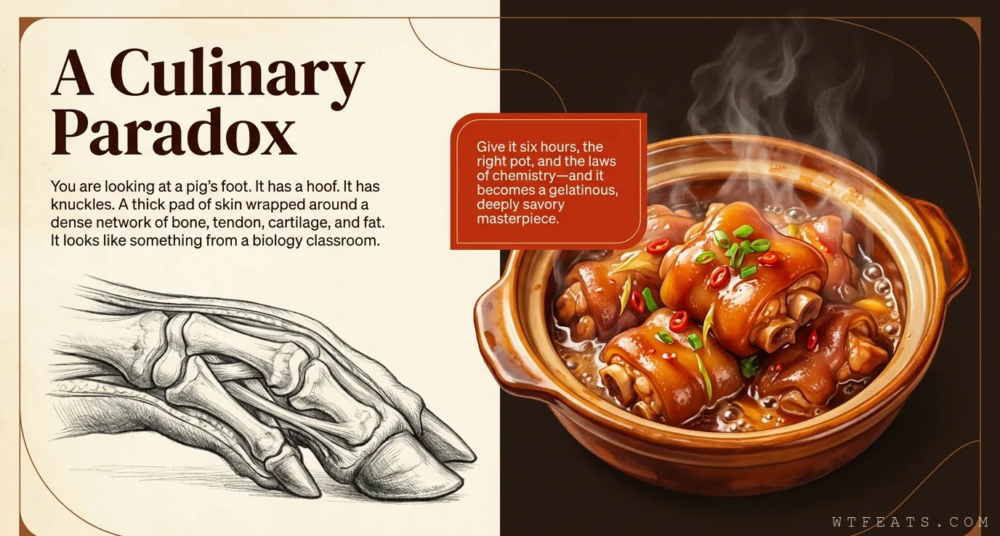

The Paradox

A culinary paradox.
Raw, a trotter looks like something that belongs in a biology classroom, not on a dinner table. Cooked properly, it is the dish people order first and fight over last. The entire craft exists to close the distance between those two images.